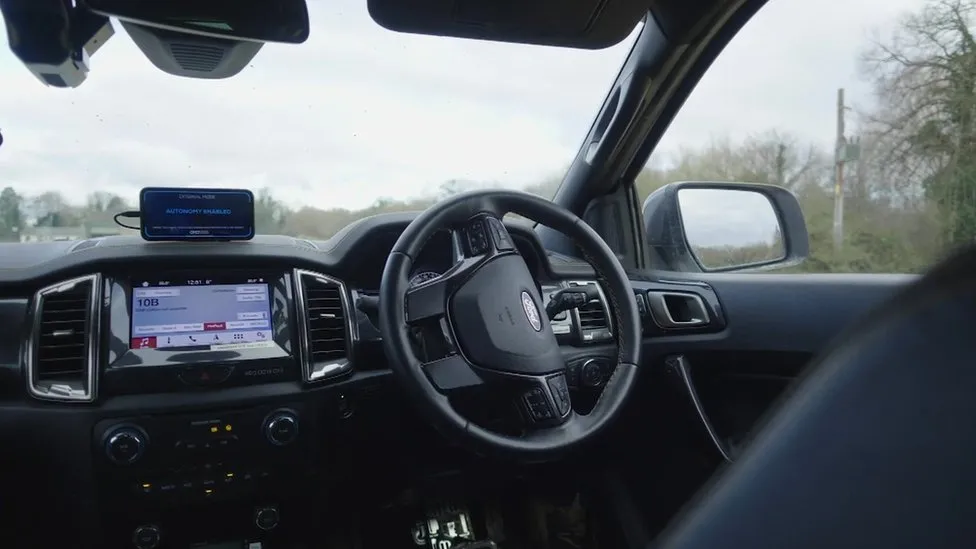

Oxfordshire based firm Oxa designs the AI behind self-driving cars
08 Jan 2024

The developer has also tested the technology on an off-road test vehicle which can function entirely on its own
By Curtis Lancaster
BBC News
The latest in automated driving technology has been on display as an Oxfordshire firm prepares for a driving "revolution".
The test car travelled around Culham Science Park, and the driver at the wheel was just there as a precaution.
It used radar, lidar and other technology, it learnt as it drove and it reacted to other vehicles.
Oxa, a technology firm based at the park, builds the software that enables any vehicle to be self-driving.

A test car can drive itself around Culham Science Park in Oxfordshire, learning as it drives and reacting to other vehicles
Professor Paul Newman, from the developer, said: "We're deploying it live now around the world, carrying passengers."
He believes the technology will not appear on private cars, but will be used for shared vehicles such as buses or airport minibuses.
He said: "I think that's how this technology arrives, it arrives in services where the economics is right."
Professor Paul Newman from Oxa said: "We're deploying it live now around the world, carrying passengers."
Oxa's aim is not to produce vehicles or even the kit that keeps people safe.
It designs the software, the artificial intelligence (AI), which it claims could be fitted to any vehicle.
Mr Newman said: "There's a revolution coming about how we move things and it's going to be software driven, not vehicle driven.
"The revolution now is that you no longer will need to have one operator per vehicle in the vehicle, you will have one operator for many vehicles, not in the vehicle, doing different things."
The developer has also tested the technology on an off-road test vehicle which can function entirely on its own.
Driverless cars on UK roads
Currently, fully automated driving systems are not legal in the UK and the Ford Mustang Mach-E is the only one that can legally self-steer on British roads.It can only do this on motorways, with the driver being monitored. The system alerts the driver after four seconds of inattention, to ensure they remain focused on the road.
In November last year, the Government introduced a bill to regulate the use of automated vehicles on UK roads and in other public places.
Due to the Automated Vehicles Bill, before these vehicles are allowed on UK roads, they will now have to meet or exceed rigorous new safety requirements, as set out in law.
Every authorised self-driving vehicle will have a corresponding Authorised Self-Driving Entity - often the manufacturer - which will be responsible for the behaviour of the vehicle when self-driving.
Companies will have ongoing obligations to keep their vehicles safe and ensure that they continue to drive in accordance with British laws.
Follow BBC South on Facebook, Twitter, or Instagram. Send your story ideas to south.newsonline@bbc.co.uk.